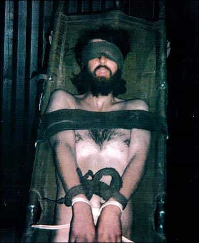

< < < Back
The Sad Saga Of John Walker Lindh, Rebel Without A Clue – Return Of Kings
John Walker Lindh grew up in the Washington, D.C. area. His family brought him to California when he was ten. In another ten years, he would become known as the American Taliban. While in Afghanistan, he was known as Sulayman al-Faris, one of several Arabic monikers he’s used over the years.
Johnny joins the jihad

There are moments when one realizes one’s vacation is really starting to suck.
When he was twelve, the young Lindh saw Spike Lee’s rather hagiographic film biography about Malcolm X. That began his fascination with Islam. While a teenager, he used the evocative email [email protected] and made several postings about rap music on Usenet. Sometimes he pretended to be Black, even having the nerve to “dis” Dr. Dre:
$hort Dog does hip hop no glory
Wack like Dr Dre and his made-up gangster stories
Sellout house nigga living honkey dory
Saying he’s broke in his own pool doing laps
All these playground MC’s fall off like scabs
Skills disappear like alaka abracadab
Dr Dre’s a disgrace selling out to the talcolm
He’ll be left dead and naked in the outcome
Word to brother Malcolm
Dre shirts and hat’s when will we see his cereal?
So who’s the poseur there, anyway? I’m not sure whether to laugh at the sheer impertinence, or cry at the abuse of the English language.
When he was sixteen, he formally converted, beginning his fateful journey. Meanwhile, his family situation was on shaky ground. His father turned gay, living part-time with his male lover, and eventually divorced.
John began his world travels, twice venturing to Yemen, both times for nearly a year. Later, he stayed at a Pakistani madrassa. In May 2001, he went to Afghanistan to fight on behalf of the Taliban. Unfortunately for him, after September 11, American forces went to war with the Taliban. He was captured on November 25 after his unit surrendered in Kunduz.
The CIA questioned him, and he claimed to be an Irishman. (That must have been an interesting conversation, perhaps “Ach, begorrah, top o’ the mornin’ to ye!” Presumably, pretending to be black again wouldn’t have gotten him very far.) Shortly after, the captive jihadis staged a bloody uprising, and Lindh escaped. Hundreds died, including Mike Spann, one of his interrogators. After that, he was recaptured and—following some rough treatment, not that I’m shedding any tears about it—questioned again. He announced defiantly that he wasn’t in the Taliban, but rather Al Qaeda. His actions sealed his doom.
Fighting for the Taliban fruitcakes was a pretty dumb move on his part. His actions after being captured were even dumber. What could he have done differently? In the beginning, he could’ve said he was interested in Islam, and his quest for discovering his spiritual roots took him abroad. Then he could have lied and told them he was press-ganged into the Taliban, and he was quite happy to be freed by his countrymen.
He could have tipped off his interrogators about the planned escape attempt—potentially sparing many lives on both sides—as well as avoiding further criminal charges for himself. Had he given a helpful warning about the uprising, likely they would’ve concluded he was small fry and let him go. After that, he could’ve become the star of the daytime TV talk shows. Then he could’ve given speeches on the anti-war circuit, helping his jihadi buddies by saying they really aren’t that bad or whatever.
Instead, he ended up faced with ten criminal charges, which could’ve meant three life sentences plus ninety years. Finally getting smart, he copped a plea for twenty years, with the possibility of three off for good behavior. Now, he’s in Federal prison, making the news back in 2012 by suing for the right to be allowed group prayer.
What went wrong?
As Bush the Elder put it, Lindh was “some misguided Marin County hot-tubber.” Later, he apologized profusely for the remark. Still, I have to say that Bush 41 was onto something with that one; all the criticism he got from that was because the truth hurts.
Things could’ve been different. Lindh didn’t have to become a renegade. If he’d made other choices, he could be living a happy life as a productive member of society, rather than counting the days in a prison cell. Still, his environment bears some responsibility for what he became.
He was raised in the Catholic faith, but a stronger grounding in it—as well as explaining some of the unpleasant realities about Islam to balance out the picture—might have put the kibosh on his journey to jihad. (A liberal environment should at least be able to explain why all that’s bad. Or has liberalism become too wishy-washy to assert its own values?) There wasn’t much chance of parental guidance turning him from the wrong path; his mother converted to Buddhism and his father left for the gay community.
For that matter, if he had acquired an appreciation for good music—be it Mozart or Metallica—perhaps he wouldn’t have been so fascinated by irritating rap music. What kind of white kid is so alienated from his heritage that he pretends to be Black and laughably accuses Dr. Dre of selling out? On that note, as for Malcolm X, didn’t Lindh have some cultural icons of his own? I have to wonder if he received much grounding in his own Irish-American heritage.
All this is an illustration of what can happen when an impressionable adolescent is cast adrift in an “anything goes” environment. Islam speaks in absolutes, enjoining right conduct and forbidding haram conduct, and they fight for what they believe in. (I can’t fault them too much for that, although I disagree with their theology and actions on many points.)
Going further, Islam offers paradise for believers—promising seventy virgins to their martyrs—and eternal hellfire and brimstone for the damned; there’s nothing wishy-washy about it. Indeed, embracing radical Islam could be interpreted as an utter rejection of the “anything goes” world view. I certainly don’t agree with Lindh’s choices, but I can see how he found that compelling in comparison to being at sea in moral relativism.
This certainly isn’t the first time that people turned their backs on their countries and went abroad to give aid and comfort to the enemy. Jane Fonda’s North Vietnam adventure comes to mind; an action she now regrets. More recently, there were about five hundred misguided youths who volunteered to be human shields in Iraq for their pal Saddam. For all their posturing, none of them got themselves blown up over there. (Leaving aside the question of whether or not the resumption of war was justified, 500 fewer Social Justice Warriors would’ve helped cleanse the gene pool a bit.)
Then there’s the odd case of Matthew Todd Miller, a Californian who went to North Korea, tore up his visa, and announced he was seeking political asylum. That one’s an iffy case though; later he said “I just wanted to speak to an ordinary North Korean person about normal things.” Kids these days…
In summary
Don’t let this happen to our youth. They must not grow up culturally bereft.
In times past, children were taught about their country’s heritage, instructed in their culture, and pride in their nation was instilled in them. It was a given that these were presented as good things. These days—at least in much of the Western world—this isn’t happening. We can’t count on the educational system—and certainly the media—to do that any more.
Because of decades of cultural Marxism, young people are indoctrinated with a negative view of their own civilization. “All societies, beliefs, and ways of life are equal, except yours are terrible.” Those who don’t see through that baloney end up rootless, alienated, and disconnected from their own culture. Some even end up thinking that their homeland is the embodiment of all evil while repressive regimes abroad are wonderful. This is basically what Social Justice Weenies think, something they have in common with young jihadi rebels without a clue.
This will have to change, of course. Hopefully, the day will come when the media manipulators and educational bureaucrats who pushed cultural Marxism are standing in the unemployment line. For now, we’ll have to pay close attention to the messages that the young people in our lives are absorbing, and help them learn to be secure in their faith and cultural identity. Teach them about their roots and why that’s important. Don’t let the TV be your child’s babysitter. “Anything goes” is not a standard by which to raise our youth.
Read More: Is Hillary Clinton’s Entourage Involved In A Satanic Pedophilia Ring?